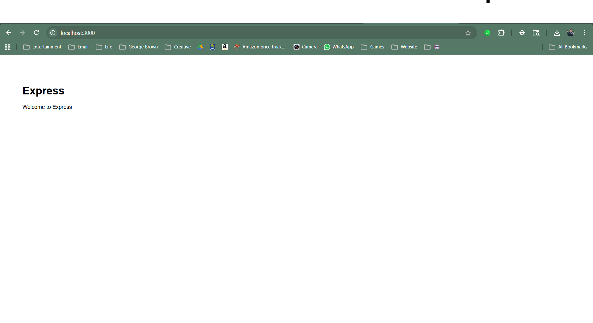
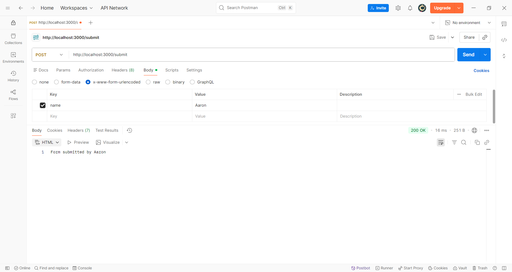
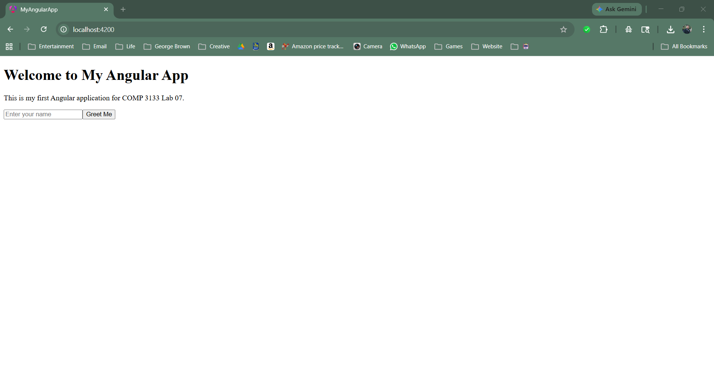
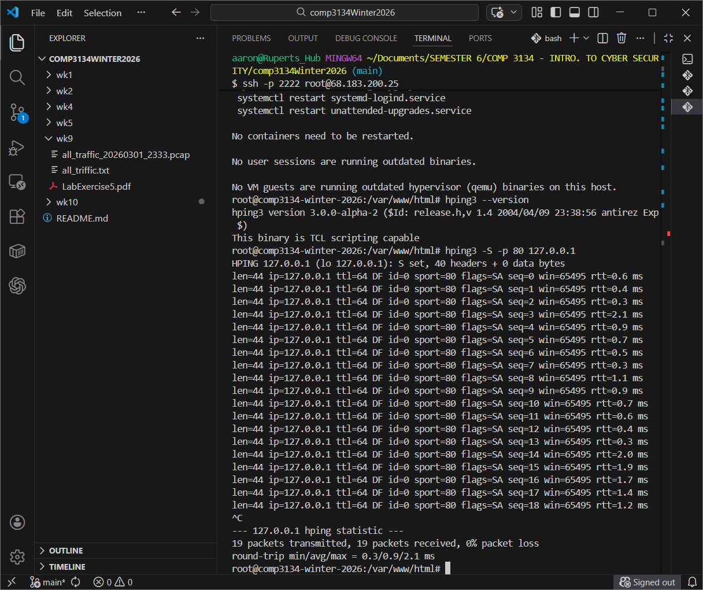
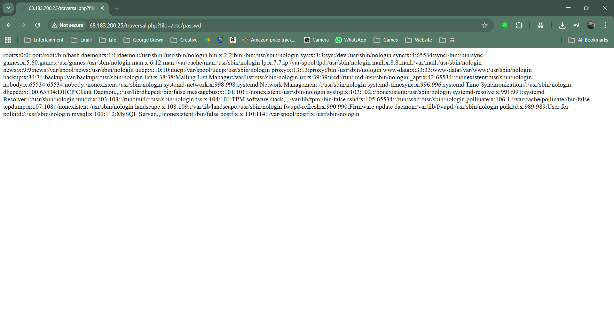
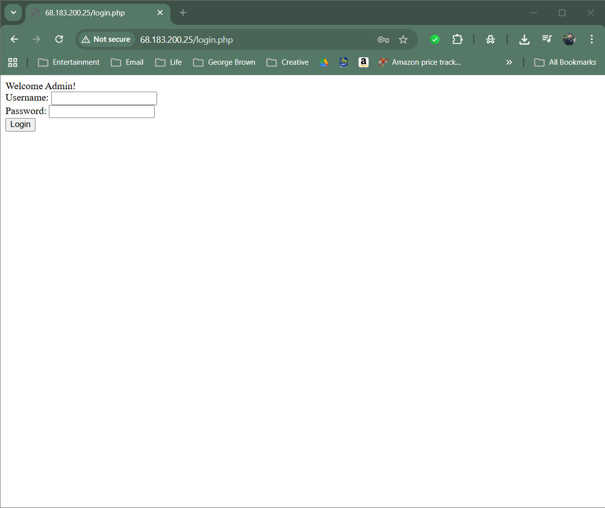

Work Samples
This section highlights selected academic and technical projects that demonstrate my experience in mobile development, backend systems, full-stack development, machine learning, and cybersecurity.
Pomodachi – Habit Tracker & Pomodoro Timer App
Description: Pomodachi is a mobile productivity app that combines habit tracking with the Pomodoro technique to encourage consistent focus and routine-building. The app rewards users for completing timer sessions by allowing them to interact with a virtual avatar, inspired by digital companion concepts like Tamagotchi and Tomodachi.
Technologies: Swift, iOS Development, UIKit, Storyboard, Mobile UI Design
GitHub Repository: View Project Repository
Key Features:
- Pomodoro-style timer to support focused work sessions
- Habit tracking functionality to encourage routine-building
- Reward-based interaction through a companion avatar
- User-focused mobile interface designed for engagement and simplicity
- Prototype development with an emphasis on navigation and usability
Key Learning: This project strengthened my understanding of mobile application design, user engagement, and how interactive features can make productivity tools more motivating and enjoyable to use.
Demo video created collaboratively as part of a team project.
Backend Application – Data Management System
Description: Developed a backend-driven application focused on managing structured data through server-side logic and database integration. The project demonstrates handling data operations, routing, and building a maintainable backend architecture.
Technologies: Node.js, Express, MongoDB, REST APIs
GitHub Repository: View Project Repository
Key Features:
- Implemented CRUD operations for managing application data
- Designed backend routes for handling client requests
- Integrated database for persistent data storage
- Structured application using modular and maintainable code practices
- Handled server-side validation and request processing
Key Learning: Strengthened my understanding of backend architecture, database interaction, and how to design systems that efficiently handle and store structured data.
Demo video created collaboratively as part of a team project.
Full Stack Lab – Express Routing & Angular Application
Description: Built a full-stack application using Express and Angular to demonstrate backend routing, middleware usage, and frontend interaction. The project included creating REST endpoints, handling query parameters, processing POST requests, and developing a basic Angular user interface.
Technologies: Node.js, Express, Angular, TypeScript, REST APIs, Postman
GitHub Repository: View Source Code
Lab Documentation: View Lab Report (PDF)
Key Features:
- Implemented Express server with structured routing
- Handled GET routes with query parameters for dynamic responses
- Processed POST requests using middleware
- Tested API endpoints using Postman
- Developed a basic Angular frontend with user interaction
Key Learning: Developed a stronger understanding of client-server architecture, including how frontend applications interact with backend APIs and how data flows through HTTP requests.



Machine Learning Project – Iris Classification Model
Description: Developed a supervised machine learning model to classify iris flower species based on petal and sepal measurements. The project demonstrates a complete machine learning workflow, including data preprocessing, model training, and evaluation.
Technologies: Python, Pandas, NumPy, Scikit-learn, Matplotlib
GitHub Repository: View Project Repository
Key Activities:
- Loaded and explored the Iris dataset using Pandas
- Performed data preprocessing and feature analysis
- Split data into training and testing sets
- Trained a classification model using Scikit-learn
- Evaluated model performance using accuracy metrics
- Visualized results to better understand model behavior
Key Learning: Gained hands-on experience building and evaluating machine learning models, and understanding how data quality and feature selection impact prediction accuracy.
Cybersecurity Lab – Web Application Vulnerabilities & Exploitation
Description: Performed hands-on security testing on a web application by identifying and exploiting common vulnerabilities, including directory traversal and insecure authentication mechanisms. The lab also involved generating network packets and analyzing system responses to simulate attack scenarios.
Technologies: Linux, PHP, hping3, HTTP Protocols, Web Security Concepts
GitHub Repository: View Cybersecurity Lab Work
Lab Instructions: View Lab Exercise
Key Activities:
- Generated custom TCP packets using hping3 to simulate network traffic and attack patterns
- Exploited a directory traversal vulnerability to access sensitive system files
- Developed and tested insecure login systems with hardcoded credentials
- Identified security risks from exposed credentials in HTML source code
- Analyzed vulnerabilities and explored mitigation techniques
Key Learning: Gained practical experience identifying real-world web application vulnerabilities and understanding how improper input validation and insecure coding practices can lead to serious security risks.


